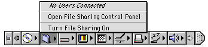

Persistent Access
A control panel may generate some sort of screen representation that persists even when the control panel itself is closed. Such screen representations should always include a mechanism for opening the control panel. For example, if a control panel has an associated control strip module, that module should include a command that opens the control panel. Figure 6-15 shows control panel access from a control strip module.Figure 6-15 Access to a control panel from a control strip
